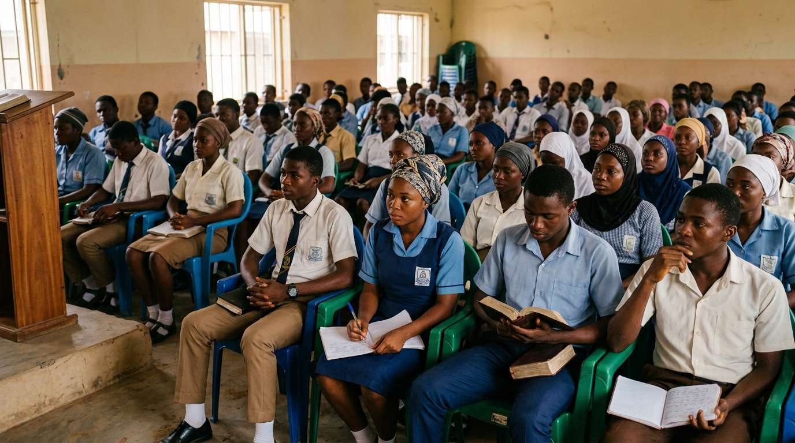

Aid for Life
Promoting healthy, responsible, and Christ-centred living among young people and communities through education, counselling, awareness campaigns, and practical life-skills development.
Equipping young people to navigate faith, education, relationships, leadership and life with wisdom and purpose.
We walk alongside young people as they navigate faith, education, relationships, career choices, peer pressure, and the challenges of contemporary society.
Through school visits, special programmes, Bible studies, rallies, counselling, mentoring, and discipleship, we encourage students and young people to build their lives on God's Word and make Christ known wherever they are.
Combining evangelism and discipleship with active engagement in schools and youth spaces, our programmes adapt to every context while staying grounded in God's Word and centred on Christ.

Promoting healthy, responsible, and Christ-centred living among young people and communities through education, counselling, awareness campaigns, and practical life-skills development.
Taking the Gospel and biblical values to schools through school visits, fellowship, mentoring, and special programmes.
Equipping teachers with biblical knowledge, practical teaching skills, and effective methods for nurturing the spiritual, moral, and personal development of children and young people.
Creating opportunities for students to gather, learn, worship and connect around positive values.
Conferences, seminars, workshops and leadership development opportunities.
Leadership, communication, financial literacy, career development, decision-making and personal development.
Guidance, encouragement and relationship-based support for responsible growth.
Equipping volunteers, school visitors and SUCF with the knowledge, skills, and practical approaches needed to effectively engage students and schools.
Partner with the people, programmes and spaces that help young people grow.